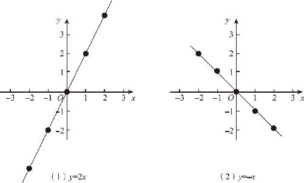
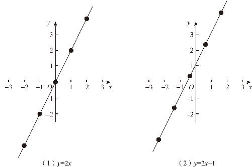
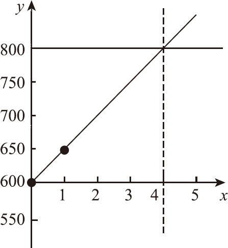

接下来，我们就把加减乘除在代数、几何和解析几何中的实现方式做一个详细的比较．
在代数学里，加减乘除的运算分别对应着多项式的展开、合并同类项、因式分解等操作，其中的因式分解是一个非常复杂的问题，而且我们一次计算只能得到一个数字．在几何学里，加减运算相对比较简单，但是乘除运算就需要用到相似三角形缩放的原理，实现起来很不容易，而且只能对线段乘除，角度是无法除的．在解析几何里，加减乘除对应的只是函数图象的移动和缩放操作，加减是图象沿着y 轴上下移动，乘除是图象沿着竖直的方向缩放．一条函数图象代表了无数组数据，根据一条函数图象轻松得出另一条函数图象的时候，等于得到了另一个函数的无数组对应数据．这就是笛卡尔灵光一闪，激动得跳起来的根本原因．
不过，把函数同加减乘除运算作比较，只是为了加深理解，从严格意义上讲，没有加减函数及乘除函数的说法．在研究函数的时候，通常都会按照变量的变化规律及函数图象的特征对函数进行分类，所谓加减乘除函数，因为函数图象都是一条直线，所以被统称为线性函数．线性函数又是一次函数，一般表达式为y ＝kx ＋b ，其中k≠0，叫一次函数是因为自变量x 的次数是1．当b ＝0时，即表达式是y ＝kx ，此时函数图象是一条经过原点的直线，称为正比例函数．因此，正比例函数是一种特殊的一次函数．接下来分析一下线性函数的基本特征．
为什么线性函数的图象都是一根直线呢？因为x 的系数是固定的，因此每当x 增加1的时候，y 总是会增加一个固定的数值，而这个固定的数值又对应着这个直线的斜率，斜率不变，所以这个线就是一条直线了．在表达式y ＝kx 或者y ＝kx ＋b 里面，这个不变的斜率就是x 的系数k．不过，y 随着x 的增加而增加，指的是k是正数的时候；当k是负数的时候，y 就会随着x 的增加而减小．比如函数y ＝－x ，它就是k＝－1的线性函数．如果把它的函数图象作出来就会发现，这个函数图象变成了一条从左上角到右下角倾斜的直线，所以说当k＜0的时候，y 随着x 的增大而减小．（如图12－9所示）

图12－9
k 本身有什么变化规律？当k ＞0的时候，k 越大，y 增加得就越快，这条直线就越靠近y 轴，直线的倾斜度就越大，坡度就越陡峭；k 越小，y 增加得就越慢，这条直线就越远离y 轴，直线的倾斜度就越小，坡度就越平缓．无论是正比例函数，还是一次函数都有这个特点．当k ＜0的时候，k 越大，直线越靠近x 轴，倾斜角越小；k 越小，直线就越靠近y 轴，倾斜角越大．请务必牢记这一点，千万不要以为正比例函数就一定是y 随着x 的增加而增加的，那得看x 的系数k 的正负才能确定．
最后，正比例函数和一次函数的区别是什么？从图象上看，正比例函数的直线是经过原点的，但一次函数的直线不一定经过原点，它会沿着y 轴移动一段距离．（如图12－10所示）从表达式上来看，它们唯一的区别就在于一次函数加上一个常数b ，加了这个常数以后，原来的那条直线就会沿着y 轴的方向上下移动．如果b 是正数，图象就往上移动；如果b 是负数，就会往下移动．因此b 就是在y 轴上移动的距离，因为它相当于在y 轴上截出了一段距离，所以把b 叫作一次函数的截距．一次函数y ＝kx ＋b 也可以理解为：函数值＝斜率×自变量＋截距．以上就是线性函数的基本性质．

图12－10
在现实生活中，线性函数有什么用？接下来就用这个函数图象解决一个实际问题．
某公司今年计划盈利800万元，已经实现盈利600万元，每个月还能盈利50万元，请问几个月后才能达成目标？这是非常简单的一个问题，用这个800万元减去600万元，然后再除以50万元就可以得到结果．现在学习了解析几何，就需要换一种思路来解决问题．刚刚接触方程式的时候，曾经从算术思维过渡到代数思维，现在要想用好函数图象这个工具，需要从代数思维过渡到解析几何的思维方式．
如果用y 轴来表示公司赚的钱，单位是万元，用x 表示时间，那么公司赚800万元就是y ＝800，不管哪一天实现，不管x 是多少，y 都等于800，这样，我们就能在y ＝800的位置上，画出一条水平的线来，这就相当于公司的目标线，至于哪个月能达到，我们先不管，反正目标先定在这里了．接下来，我们再画出公司的实际利润线，现在公司有600万元，就先在y 轴的600这个地方描上一个点．同时，公司每个月还能赚50万元，如果我们用x 轴表示月份，那就是说，当x ＝1的时候，y 轴加上了50，变成了650，这时候，我们又得到了另一个点的坐标，那就是（1，650），我们知道每个月固定赚50万元，说明它的增长速度是均匀的，因此这是一个线性函数，它的图象是一条直线，又因为两点之间可以确定一条直线，所以，我们就可以把（0，600）和（1，650）这两个点连起来，这条斜线一作出来，它就和y ＝800的这条水平线产生了一个交点，这个交点所对着的x 轴坐标，就是我们达到目标的具体时间．（如图12－11所示）以上就是通过解析几何来解决实际问题的方法．请你认真体会一下，这个过程是不是和几何作图的思路很接近呢？都是通过两条线找到一个交点．

图12－11
不过，对于这个题目而言，通过这种方法解决，的确没有提供什么方便．本来一道简单的算术题，变成了几何图形以后，反而会越来越复杂了．不妨反过来想一下，如果这本来就是一道几何题呢？是不是就可以通过这种方法把它变成简单的算术了呢？没错，这就是解析几何的好处，当我们打通了几何和代数的壁垒以后，遇到实际问题时，怎么方便就怎么来．而且笛卡尔当年发明这个解析几何，主要就是通过代数方法解决几何问题的．要不然为什么把这门学问叫解析几何，而不把它称为图形代数呢？